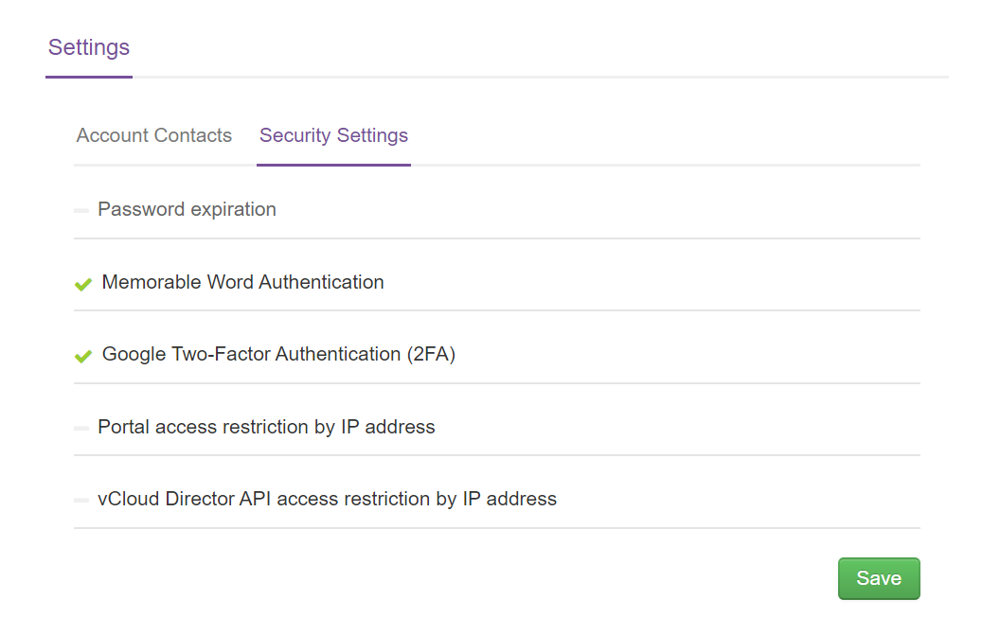
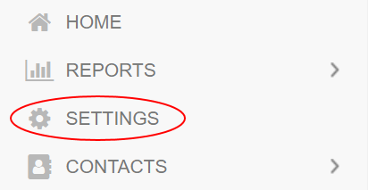
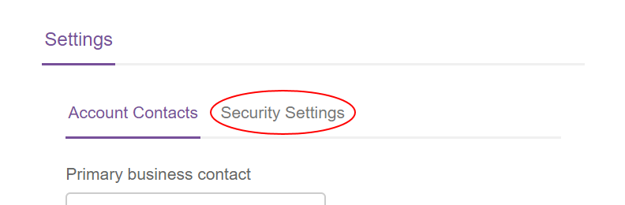

UKCloud Portal security settings
The UKCloud Portal provides various settings to enable you to provide additional security to your accounts.

Tip
A green tick next to a section indicates that particular security setting has been enabled.
Password expiration - Set passwords to expire after a specified number of days. This ensures that users change their passwords frequently. For more information, see How to set up password expiration.
Google two-factor authentication (2FA) - Add an extra level of authentication whereby users provide a security code from an authenticator app (such as Google Authenticator or Authy) as well as their password to confirm their identity. For more information, see How to enable two-factor authentication in the UKCloud Portal.
Portal access restriction by IP address - Restrict access so that users can only log in to the Portal from specific IP addresses. For more information, see How to restrict access to the Portal.
vCloud Director API access restriction by IP address - Restrict access so that users can only access the vCloud API from specific IP addresses. For more information, see How to restrict access to the vCloud API.
To change Portal security settings:
Log in to the UKCloud Portal as an administrator.
For more detailed instructions, see the Getting Started Guide for the UKCloud Portal.
If necessary, switch to the account for which you want to change the security settings.
In the navigation panel, select Settings.

On the Settings page, select the Security Settings tab.

Click a section to expand it, make changes as required and when you're done, click Save.
Feedback
If you find an issue with this article, click Improve this Doc to suggest a change. If you have an idea for how we could improve any of our services, visit UKCloud Ideas. Alternatively, you can contact us at products@ukcloud.com.